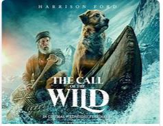
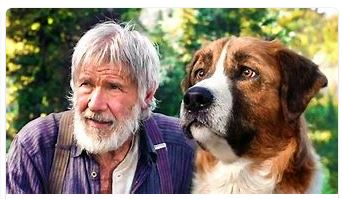

- chơi game điện thoại:
- liên quân
- honkai starrail
- đọc sách và xem phim
- truyện Artemis Fowl
- phim ready player one
- Eternals
| Question | Answer |
|---|---|
| món ăn ưa thích | pizza thêm nhiều xúc xích |
| ban nhạc ưa thích | Imagine Dragon |

Cuộc gọi của hoang dã là một câu chuyện sôi động về Buck, một con chó lớn và tốt bụng, một con lai giữa một St. Bernard và một Scotch Collie, có cuộc sống giải trí vô tư đột nhiên bi kịch ập tới khi khi anh ta bị đánh cắp từ nhà ở quận Santa Clara, California và bị trục xuất về phía bắc, được bán ở Skagway, Alaska, và đưa xa hơn về phía bắc, đến thành phố Dawson, Yukon, trong cuối những năm 1890s Klondike Gold Rush, khi những con chó trượt tuyết mạnh có nhu cầu cao. Là một người mới đến dịch vụ giao hàng của đội chó - và không phải là người chạy bộ trước của họ - Buck, một con chó đã bị đánh đập,bị vắt kiệt sức lực để kéo hàng,nhưng anh ta không thể bị hạ gục, đang có thời gian của mình mạng sống. Buộc phải chiến đấu để tồn tại, cuối cùng được thực hiện bởi chủ sở hữu cuối cùng của mình, John Thornton, gần vùng Bắc Cực, ở đâu đó giữa Yukon và Alaska, anh ta dần dần phụ thuộc vào bản năng nguyên thủy của mình, từ chối những sự thoải mái của nền văn minh và trả lời "cuộc gọi của hoang dã ", như thạc sĩ của riêng mình.
giới thiệu nhân vật
buck:một con chó lớn và tốt bụng.Nhưng bị ném vào cuộc sống khắc nghiệt ở Alaska để tìm vàng John Thornton:người chủ cuối cùng của Buck 
đạo diễn:Chris Sanders